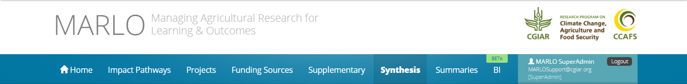

<!-- <nav *ngIf="isCRP()">
    
</nav> -->


<nav class="navbar navbar-expand header-bar" *ngIf="currentUser && !isCRP() && (router.url !== '/qa-close')">
    <div (click)="goToView('logo')" class="logo-container">
        <i class="cgiar-logo"></i>
        <h3>QA PLATFORM</h3>
        <!-- {{activeRoute}} -->
    </div>
    <div class="row navbar-container">
        <div class="upper-navbar">
            <div class="panel">
                <p>{{currentUser.name}}</p>
                <p>{{currentUser.email}}</p>
            </div>
            <div class="log-out-panel" (click)="logout()">
                <p>Signout</p>
                <i class="icon-log-out"></i>
            </div>
        </div>

        <div class="navbar-nav custom-header-links">
            <a class="nav-item nav-link" [routerLinkActive]="['active']"
            [routerLink]="['/dashboard', currentRole]">Home</a>
            <!-- routerLink="/dashboard/{{currentUser.roles[0].description.toLowerCase()}}">Home</a> -->
            <a class="nav-item nav-link" [routerLinkActive]="['active']"
                routerLink="/indicator/{{ indicator.indicator.type}}/{{ indicator.indicator.primary_field}}"
                *ngFor="let indicator of indicators; index as i">{{indicator.indicator.name}}</a>
            <!-- <a class="nav-item nav-link" [routerLinkActive]="['active']" [routerLink]="['./indicator', indicator.indicator.type, indicator.indicator.primary_field]" *ngFor="let indicator of indicators; index as i">{{indicator.indicator.name}}</a> -->

        </div>
    </div>
</nav>